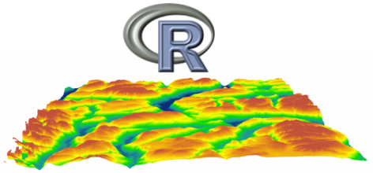
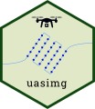
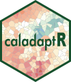

Introduction Part 1 
BayGeo’s GIS Education Center specializes in short-term, affordable, evening and weekend workshops,taught live by skilled and friendly geospatial experts.
tlocoh
Homerange and spatial-temporal pattern analysis for wildlife tracking data http://tlocoh.r-forge.r-project.org/

Data management utilities for drone mapping https://ucanr-igis.github.io/uasimg/

Bring climate data from Cal-Adapt into R using the API https://ucanr-igis.github.io/caladaptr/
Compute degree days in R https://ucanr-igis.github.io/degday/
Chill Portions Under Climate Change Calculator https://ucanr-igis.shinyapps.io/chill/
Drone Mission Planner for Reforestation Monitoring Protocol https://ucanr-igis.shinyapps.io/uav_stocking_survey/
Stock Pond Volume Calculator https://ucanr-igis.shinyapps.io/PondCalc/
Pistachio Nut Growth Calculator https://ucanr-igis.shinyapps.io/pist_gdd/
Get better at:
1) Understand foundational terms and concepts
2) Hands-on practice
3) Discover RStudio’s bells and whistles
4) Learn how to get help
Slides
Keyboard shortcuts for slides:
A: toggle display of current vs all slides S: make fonts smaller B: make fonts larger F: toggle display of the footer C: Show table of contents
Exercises
Community Forum
Virtual Environment
https://posit.cloud/content/8003179
Data and packages pre-installed!
Data
Other Resources & Cheatsheets
Everything!